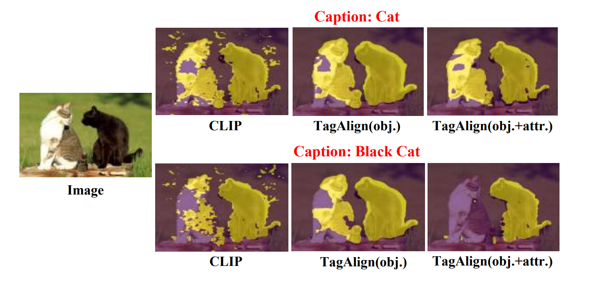
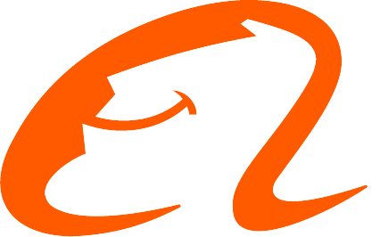

About Me
I am a Ph.D. student at University of Science and Technology of China, under the supervision of Prof.Zheng-Jun Zha.
I am currently an intern at Ant Research, working with Kecheng Zheng.
Research Interests
- Computer Vision
- Multimodal Representation Learning
- Image Retrieval
Publications
(* indicates equal contribution)
-
Kecheng Zheng*, Yifei Zhang*, Wei Wu, Fan Lu, Shuailei Ma, Xin Jin, Wei Chen, Yujun Shen
ECCV, 2024.
-

Qinying Liu*, Wei Wu*, Kecheng Zheng, Zhan Tong, Jiawei Liu, Yu Liu, Wei Chen, Zilei Wang, Yujun Shen
arxiv, 2023.
-
Kecheng Zheng*, Wei Wu*, Ruili Feng, Kai Zhu, Jiawei Liu, Deli Zhao, Zheng-Jun Zha, Wei Chen, Yujun Shen
ICCV, 2023.
-
Jihong Fang*, Wei Wu*, Jiawei Liu, Sicheng Zhang
PAIN, 2023. (IF 7.9)
-
Wei Wu*, Jiawei Liu*, Kecheng Zheng, Qibin Sun, Zheng-Jun Zha
CVPR, 2022.
-
Jiawei Liu, Zheng-Jun Zha,Wei Wu, Kecheng Zheng, Qibin Sun
CVPR, 2021.
Experiences
Ant Group
Dec. 2023 - Present
Research Intern

Alibaba Tongyi Lab
Oct. 2022 - Nov. 2023
Research Intern
University of Science and Technology of China
Sep. 2020 - Present
Ph.D. Student
University of Science and Technology of China
Sep. 2016 - Jul. 2020
Bachelor Degree
Services
Conference Reviewers
Powered by Jekyll and Minimal Light theme.